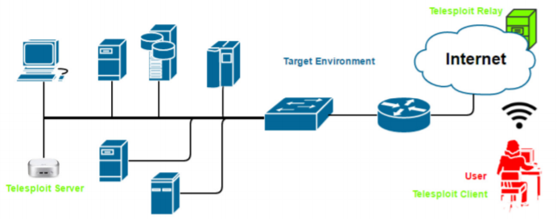
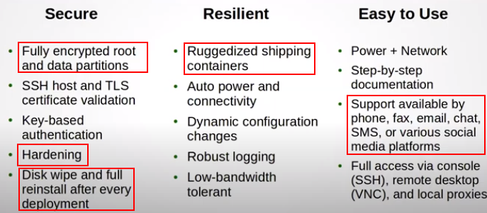

Telesploit
Their software is open source and we can configure it ourself,
Here we have an explanation of Wirefall
(aka
@DHAhole) Chief Consultant of Telesploit
Telesploit software:
https://github.com/telesploit•
Telesploit Server:
The server runs a customized version of Kali Linux and is deployed within the target environment. Once network
connectivity and power have been applied to the device, it will automatically connect to the relay server and create
TLS encapsulated reverse SSH tunnels in its default configuration. These connections provide access to a commandline
interface (SSH), remote desktop (VNC), web proxy (Squid), and many other applications on the Telesploit
server.
•
Telesploit Relay(ubuntu@telesploit-os): The relay runs in the cloud and provides
secure access to the Telesploit server from Internet-connected clients using SSH key-based authentication. The relay
includes pre-configured IRC and Mattermost servers for team-based communication and collaboration.
•
Telesploit Client(daniele@telesploit): The client connects to the Telesploit server via the relay.
Penetration testing tools, such as Metasploit, can then berun directly from the server within the target environment
or proxied through the established connections.
Differences between the Open Source and the Commercial edition of
Telesploit:
•
Commercial:
◇ Cost(the charge is start to be applied at
the first day of the penetration test9 :
▪ short term engagement → charged by day 200$ or 250$(Windows VM+wifi
card)
▪ yearly
◇ have Dedicated relay servers (telesploit.com)
◇ have maintenance, shipping, and
client support of the Telesploit server
◇ have an SDcard that is used to decrypt partitions of the Telesploit
Server, that are been encrypted with LUKS
◇ 3G connectivity of the Telesploit Server, useful for exchange of
configurations file in case of problems
•
Open Source:
◇ assigned
ports numbers are static while in the commercial version are assigned by deployment
◇ Configuration and
deployment of server is user's responsibility
◇ Configuration of Relay is user's responsibility
◇ Domain ownership required
▪ We have to configure the DNS
◇ the drives are unencrypted
◇ No 3G
connectivity, if there are problems the configuration via encrypted file of the Telesploit Server can be done only
via USB